Ein Produkt von Flow Solutions
Ihre Firma weiß, wie es geht. LEXIA hält es fest.
Abläufe, Zuständigkeiten und Vertretungen an einem Ort – damit der Betrieb weiterläuft, wenn jemand fehlt oder geht. Und Antworten auf Fragen aus Ihrem Firmenwissen, immer mit Quelle und nur mit dem, was die fragende Person sehen darf.
So arbeitet LEXIA
Vier Schritte, damit nichts an einer Person hängt.
Wissen sichern, Vertretung klären, Urlaub planen, Lücken schließen. Mehr braucht es nicht – und Ihre anderen Werkzeuge dürfen bleiben.
-
Schritt 1
Wissen sichern
Was in Köpfen steckt, festhalten.
- Erzählen statt dokumentieren – LEXIA schreibt mit
- Dateien und Fotos hineinziehen – PDF, Word, Excel
- Fragen stellen – Antworten immer mit Quelle
- Firmen-Lexikon für Abkürzungen und Fachbegriffe
-
Schritt 2
Vertretung klären
Wer macht was, wer springt ein?
- Abläufe Schritt für Schritt – auch als Checkliste
- Je Ablauf: verantwortlich und Vertretung
- „Wer macht was?“ und Organigramm
- Hier hängt es an einer Person – ohne Namen
-
Schritt 3
Urlaub planen
Sehen, was liegen bliebe.
- Vertretung für Urlaub oder Krankheit planen
- Auch wenn ein Lieferant oder System ausfällt
- Notfallhandbuch auf Knopfdruck
- Keine Bewertung von Personen
-
Schritt 4
Lücken schließen
Damit das Wissen aktuell bleibt.
- Offene Fragen gehen an die Zuständigen
- Wissenslandkarte zeigt, wo Wissen fehlt
- Erinnerung, wenn etwas veraltet oder unbestätigt ist
- Einarbeitung für neue Kolleginnen und Kollegen
Personen aus Excel oder Outlook einladen · Microsoft Teams folgt
Absicherung · im Paket Business
Was wäre, wenn morgen jemand fehlt?
Krankheit, Kündigung, Rente – oder der wichtigste Lieferant, das SAP-System: Fällt etwas Entscheidendes aus, steht oft mehr still als gedacht. LEXIA zeigt es Ihnen vorher – nicht erst im Ernstfall.
-
Vertretung für Urlaub, Krankheit oder Lieferant planen
Zeitraum wählen, 1 bis 12 Wochen – oder einen Lieferanten bzw. ein System wie SAP. LEXIA zeigt, welche Abläufe, Fristen und Aufgaben liegen bleiben würden und wer einspringen kann – jeweils mit Grund und Maßnahme. Es geht um Abläufe, nicht um Menschen.
-
Lücken sehen
Je Ablauf: Wer ist verantwortlich, wer vertritt? Ganz oben steht, wo alles an einer Person hängt – etwa mehrere wichtige Abläufe ohne Vertretung oder ein Bereich mit nur einer zuständigen Person. „Nicht erfasst“ heißt dabei nie „kein Risiko“.
-
Notfallhandbuch ziehen
Vertretungsplan, Ausweichlösungen für Lieferanten und Systeme und alle Schritte je Ablauf als PDF. Es gilt als geprüft, sobald die Zuständigen ihre Abläufe bestätigt haben.
Schnellstart: Nach der Anmeldung führt LEXIA Sie in drei Schritten zum ersten Notfallhandbuch – drei wichtige Abläufe erzählen oder aus einer Vorlage übernehmen, Verantwortliche und Vertretung wählen, PDF herunterladen. Dauer: etwa 30 Minuten.
LEXIA bewertet keine Personen und fragt nie nach dem Grund einer Abwesenheit. Damit Mitarbeitende in den Urlaub können, ohne angerufen zu werden. Planen dürfen nur Geschäftsführung, Führungskräfte und Personal; jede Nutzung steht im Protokoll.
Was LEXIA kann
Alles, was es heute gibt – und was als Nächstes kommt. Tippen Sie auf eine Zeile, um ein Bild aus LEXIA zu sehen.
Sichern
Was in Köpfen steckt, kommt in LEXIA.
Wissen sichernErzählen, Dokumente ablegen oder offene Fragen beantworten – LEXIA ordnet es dem richtigen Bereich zu.fertigBild ansehen
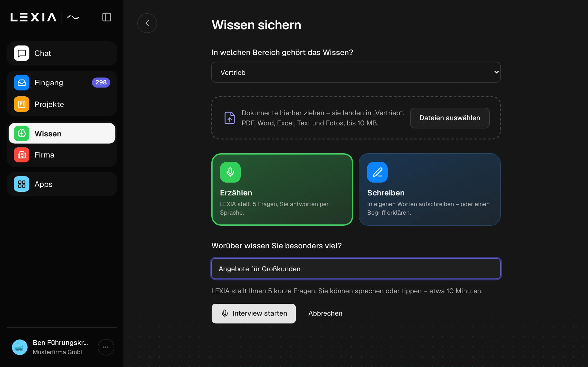
AbläufeJeder Ablauf als Landkarte und Schritt für Schritt, dazu eine Arbeitsanweisung zum Ausdrucken.fertigBild ansehen
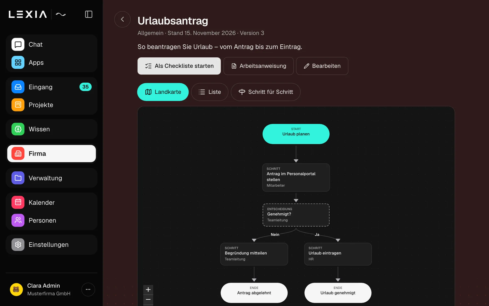
Ablauf erzählenErzählen Sie, wie es bei Ihnen läuft – gesprochen oder im Chat. LEXIA zeichnet daraus einen Entwurf.fertigBild ansehen
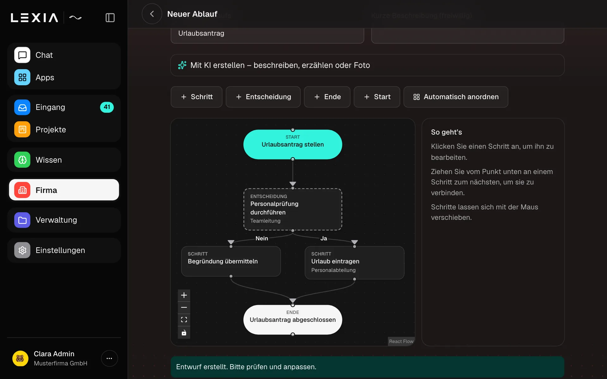
WissenslandkarteZeigt, welche Bereiche gut gepflegt sind und wo Wissen fehlt.fertigBild ansehen
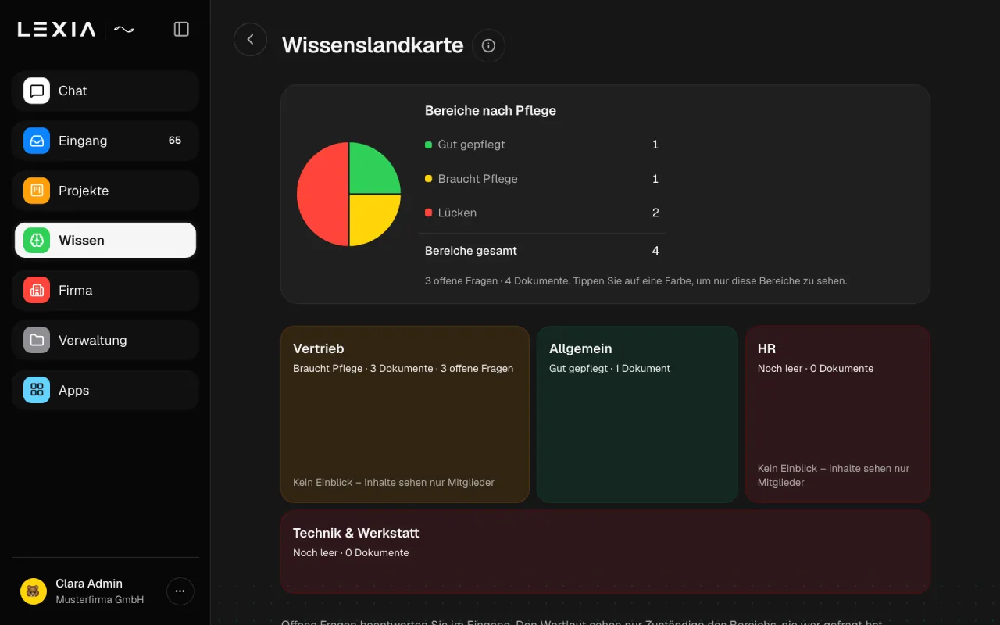
Absichern
Damit nichts an einer Person hängt.
AbsicherungJe Ablauf Verantwortlich und Vertretung – und auf einen Blick, wo es an einer Person hängt.BusinessfertigBild ansehen
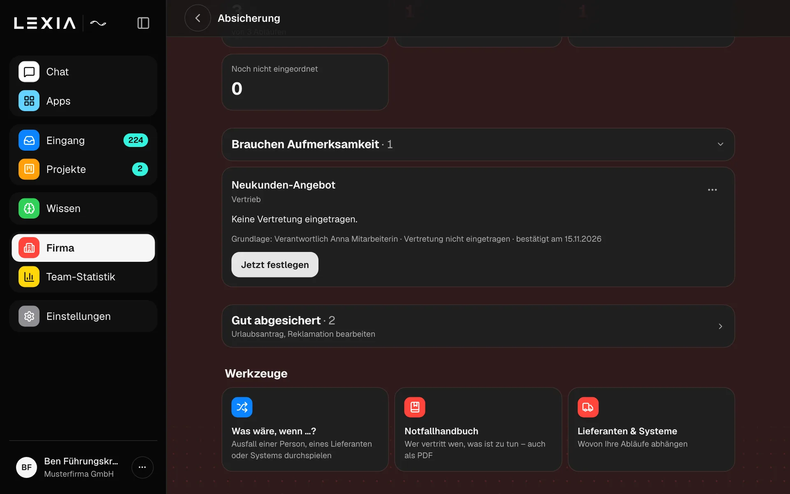
- Wer vertritt mich?Jede Person sieht ihre Abläufe und ob jemand einspringen kann – und schlägt selbst eine Vertretung vor.Businessfertig
Was wäre, wenn …?Den Ausfall einer Person, eines Lieferanten oder Systems durchspielen – mit Grund und Maßnahme.BusinessfertigBild ansehen
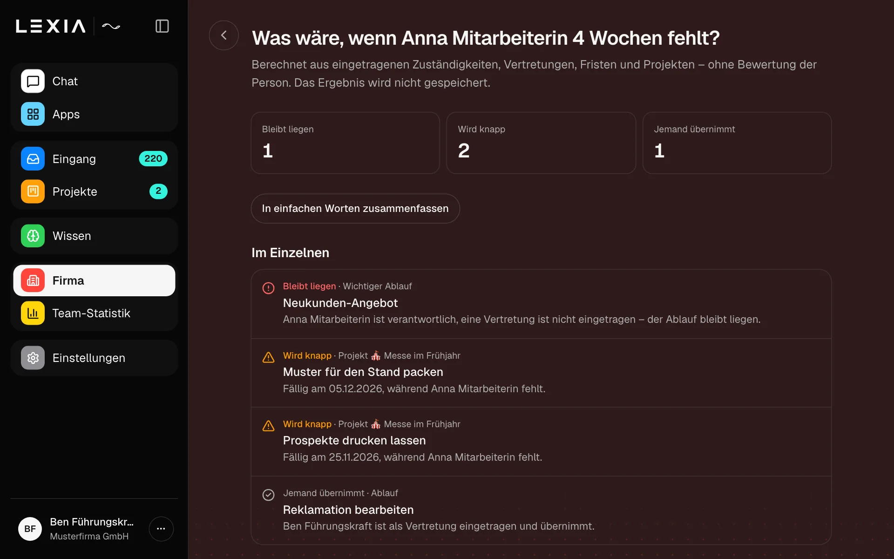
NotfallhandbuchVertretungsplan, Lücken und alle wichtigen Abläufe – als Übersicht und PDF auf Knopfdruck.BusinessfertigBild ansehen
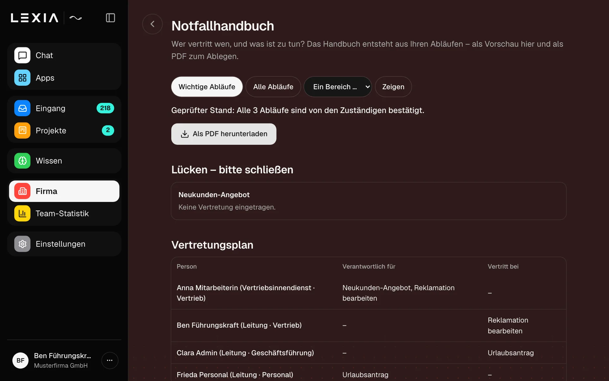
Übergabe bei AbschiedWenn jemand geht, legt LEXIA zwei Checklisten an, damit Abläufe und Wissen bleiben. Ein Grund wird nie gefragt.BusinessfertigBild ansehen
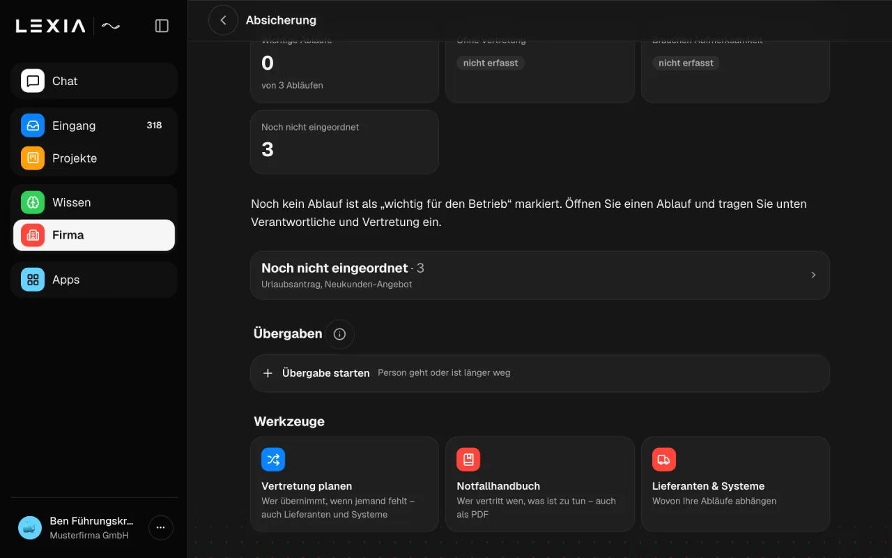
- Lieferanten & SystemeWovon Ihre Abläufe abhängen – und was zu tun ist, wenn etwas ausfällt.fertig
ZuständigkeitenOrganigramm, Stellenprofile und „Wer macht was?“ – der Chat nennt die richtige Ansprechperson.BusinessfertigBild ansehen
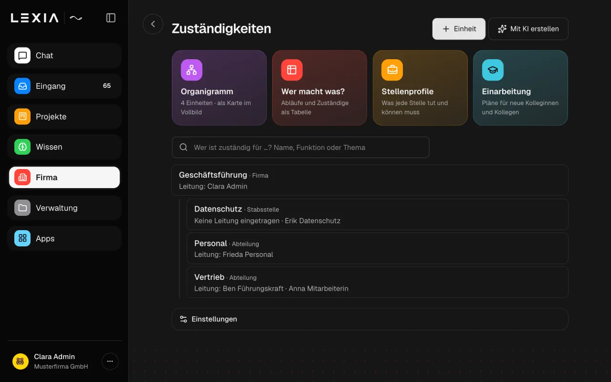
EinarbeitungEin Plan in Wochen aus Stellenprofil, Abläufen und Wissen – mit kurzen Wissenschecks ohne Bewertung.BusinessfertigBild ansehen
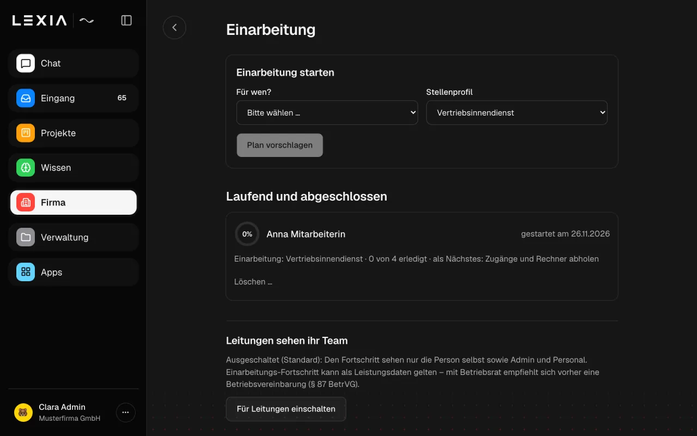
Abrufen
Die Antwort finden, wenn man sie braucht.
Chat mit QuellenFragen in eigenen Worten, Antworten aus Ihrem Firmenwissen – immer mit Quelle, sonst ein ehrliches „weiß ich nicht“.fertigBild ansehen
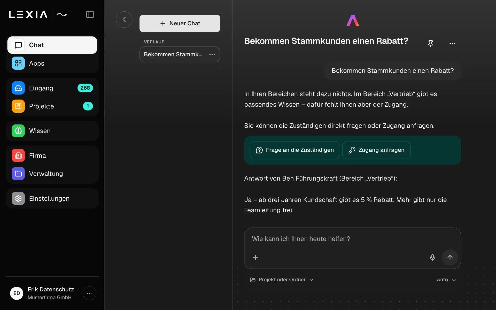
Wissen & LexikonSuchen nach Bedeutung, dazu die Abkürzungen und Fachbegriffe Ihrer Firma von A bis Z.fertigBild ansehen
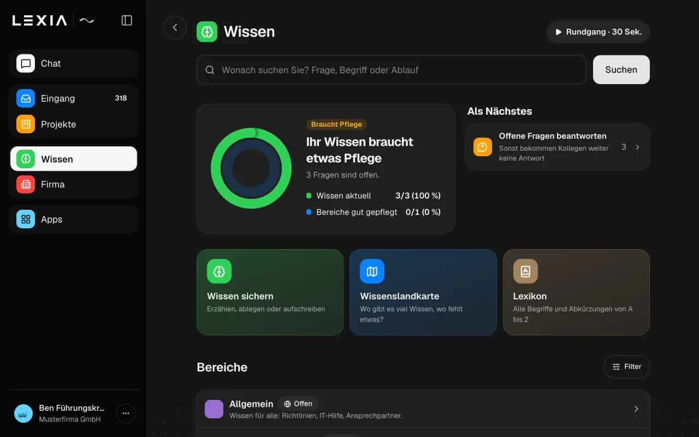
- KI-Assistenten verbindenClaude oder ChatGPT fragen Ihr LEXIA-Wissen ab – nur lesend und nur mit den Rechten der Person.fertig
Weitere
Was den Alltag rundherum leichter macht.
- Aufgaben & ChecklistenAbläufe als Checkliste starten und Aufgaben im Team verteilen.fertig
KalenderFristen und Termine der Firma in Tag, Woche, Monat und Jahr.fertigBild ansehen
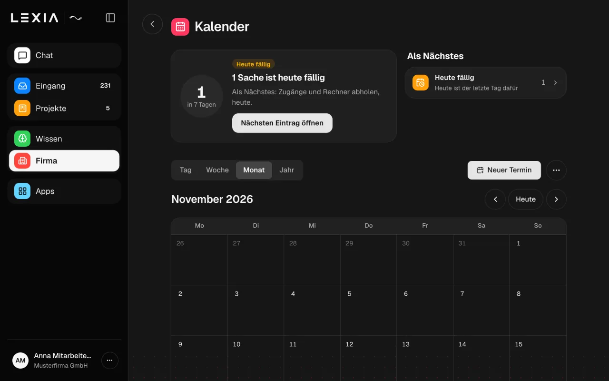
Unterlagen zur VorbereitungVorlagen für DSGVO, ISO 27001, Betriebsrat und EU AI Act als PDF – zur Vorbereitung, keine Zertifizierung.BusinessfertigBild ansehen
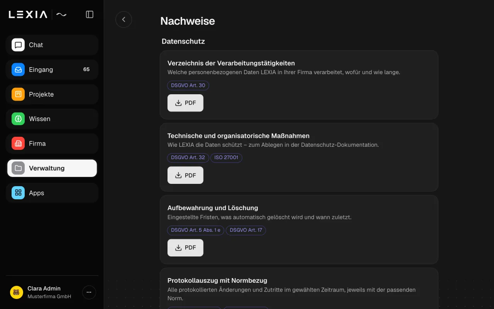
- Anmelden mit MicrosoftMit dem Firmenkonto anmelden; auf Wunsch nur noch über Microsoft.fertig
- Microsoft TeamsLEXIA direkt in Teams fragen.folgt
- Anmelden mit GoogleAnmelden mit dem Google-Konto der Firma.folgt
„Business“ heißt: im Paket Business enthalten. Pakete vergleichen
Zuschauen statt lesen
Fünf kurze Rundgänge durch das echte LEXIA. Wählen Sie einen aus und scrollen Sie weiter.
-
„Neuer Ablauf“ antippen
Unter Firma → Abläufe auf „Neuer Ablauf“ tippen und den Bereich wählen, zu dem der Ablauf gehört.
-
Namen geben, dann erzählen
Einen Namen eintragen, zum Beispiel „Urlaubsantrag“, und auf „Ablauf erzählen“ tippen. Ein Foto vom Whiteboard geht genauso.
-
Einfach sagen, wie es läuft
Wer macht was, und was passiert bei Ausnahmen? LEXIA schreibt mit. Niemand muss ein Diagramm zeichnen.
-
LEXIA zeichnet den Ablauf
Aus dem Erzählten werden Schritte, Entscheidungen und Zuständige – als Landkarte, die jeder versteht.
-
Anpassen mit einem Klick
Schritt antippen und rechts Titel, Art und Zuständige ändern. Schritte lassen sich mit der Maus verschieben.
-
Speichern – für alle sichtbar
Jede Person im Bereich sieht den Ablauf jetzt als Landkarte oder als Liste. Ändern dürfen nur die Zuständigen.
-
LEXIA kennt den Ablauf
Fragt jemand im Chat „Wie läuft ein Urlaubsantrag ab?“, antwortet LEXIA mit genau diesem Ablauf – und nennt ihn als Quelle.
-
Als Checkliste abhaken
Mit „Als Checkliste starten“ steht der Ablauf unter „Aufgaben“ zum Abhaken. So wird nichts vergessen – auch nicht in der ersten Woche.


„Wissen sichern“ antippen
Unter „Wissen“ führt „Wissen sichern“ zu allem, was Sie festhalten möchten – Dokumente, Erzähltes oder Geschriebenes.
Bereich und Thema wählen
Dokumente oben hineinziehen – oder „Erzählen“ bzw. „Schreiben“ wählen. Hier: erzählen und das Thema nennen.
LEXIA fragt, Sie erzählen
Fünf kurze Fragen, wie im Gespräch mit einer neuen Kollegin. Sprechen genügt – LEXIA schreibt mit.
Fertig – LEXIA schreibt das Dokument
Aus den Antworten wird ein geordneter Wissenseintrag mit Überschriften und Schritten. Nichts muss formatiert werden.
Das Wichtigste steht oben
Jedes längere Dokument bekommt auf Wunsch eine Kurzfassung in 3–5 Punkten. Der volle Text bleibt für Antworten.
Oder einfach hineinziehen
PDF, Word, Excel oder Foto unter „Wissen sichern“ oder direkt auf einen Bereich ziehen – LEXIA liest den Text und fragt, ob eine Kurzfassung hilft.


Fragen wie im Gespräch
Normale Sprache genügt. LEXIA antwortet nur aus dem Wissen, das die Person sehen darf – und nennt die Quelle.
Abläufe direkt zum Abhaken
Stützt sich die Antwort auf einen Ablauf, stehen die Schritte darunter – mit „Als Checkliste starten“.
Kein Zugang? Keine Sackgasse.
Steht die Antwort in einem Bereich, den man nicht sieht, nennt LEXIA nur den Namen – und man fragt die Zuständigen direkt.
Die Zuständigen antworten einmal
Die Frage steht in ihrem Eingang. Mit „Für alle merken“ wird die Antwort zu Wissen.
Ab jetzt antwortet LEXIA selbst
Die Antwort landet im Chat der fragenden Person. Fragt das nächste Mal jemand anderes, weiß LEXIA es schon.


Sehen, wo es an einer Person hängt
Unter Firma → Absicherung steht ganz oben, wo niemand einspringen kann. Ein Tipp auf „Vertretung festlegen“ führt direkt zum Ablauf.
Vertretung mit einem Klick
Am Ablauf wählen Sie, wer verantwortlich ist und wer vertritt. „Speichern – ist so aktuell“ bestätigt die Zuständigkeit zugleich.
Was wäre, wenn …?
Unter „Werkzeuge“ öffnen, Person und Zeitraum wählen, dann „Vertretung planen“. Einen Grund fragt LEXIA nicht ab, das Ergebnis wird nicht gespeichert.
Bleibt liegen, wird knapp, jemand übernimmt
Aus Zuständigkeiten, Vertretungen, Fristen und Projekten rechnet LEXIA, was in der Zeit passiert – jeder Punkt mit Grund, ohne Bewertung der Person.
Maßnahmen gleich als Aufgaben
Unter dem Ergebnis stehen passende Schritte, etwa „Vertretung festlegen“. Ausgewählte Maßnahmen werden Ihre eigenen Aufgaben.
Das Notfallhandbuch entsteht von selbst
Wer vertritt wen, wo sind Lücken: als Vorschau und als PDF zum Ablegen. Solange nicht alles bestätigt ist, steht „Entwurf“ darauf.


Alle Projekte auf einen Blick
Jedes Projekt als Karte mit Fortschritt und Lage – was hängt, steht vorn. Ein neues beginnt mit „Neues Projekt“.
In einem Satz beschreiben
Mit „Mit LEXIA planen“ das Projekt in einem Satz beschreiben – LEXIA schlägt Meilensteine, Aufgaben und passende Abläufe vor. Oder ein früheres Projekt als Vorlage nehmen. Gespeichert wird erst mit „Projekt anlegen“.
Aufgaben anlegen und vergeben
Aufgabe eintippen, Person und Datum wählen, „Hinzufügen“. Die Person findet sie sofort bei ihren Aufgaben.
Abhaken – der Ring füllt sich
Wer fertig ist, hakt ab. Mit jeder erledigten Aufgabe wächst der Fortschritt des Projekts.
Alle eigenen Aufgaben an einem Ort
Oben auf „Aufgaben“ umschalten: Dort steht alles, was Sie erledigen sollen – auch Checklisten aus Abläufen und die Einarbeitung.


Mein LEXIA
Mein LEXIA zeigt das Wichtigste auf einen Blick: eine Frage stellen, Ihre Aufgaben, Ihr Eingang und mehr.
Anordnen, wie Sie es mögen
Mit „Bearbeiten“ schieben Sie Widgets nach vorn oder hinten oder entfernen sie. Ziehen mit der Maus geht auch.
Neue Widgets hinzufügen
„Widget hinzufügen“ zeigt alles, was zu Ihren Apps passt. Antippen, hinzufügen – und mit „Fertig“ speichern.
Ein Tipp öffnet die ganze Seite
Ein Widget zeigt nur den ersten Blick. Wer mehr sehen will, tippt darauf – hier auf „Meine Aufgaben“.
Und mit einem Tipp zurück
Der Pfeil oben links führt zurück zu Mein LEXIA. So gibt es keine Sackgasse.


Sicherheit & Datenschutz
DSGVO-orientiert gebaut und an ISO 27001 orientiert – ohne Zertifizierung.
Frankfurt am Main
Datenbank und Dateien liegen in Frankfurt.
Chats sind privat
Auch Admins und Flow Solutions lesen sie nicht.
Vier-Augen-Prinzip
Zweite Freigabe für sensible Bereiche wie HR: Neue Zugänge bestätigt eine zweite Person.
Zwei-Faktor-Anmeldung
Für Admins verpflichtend einstellbar.
Unveränderliches Protokoll
Rechteänderungen und Zutritte sind nachvollziehbar.
Über 390
automatische Sicherheitsprüfungen für Rechte und Datentrennung.
Für Betriebsräte: LEXIA wertet keine einzelnen Personen aus. Ein Transparenzbericht liegt als PDF bei.
Offen gesagt: Ihre Daten werden in Frankfurt gespeichert. Die KI-Antworten erzeugt derzeit ein Anbieter, dessen Verarbeitung nicht garantiert in der EU erfolgt – für Enterprise ist eine reine EU-Verarbeitung vorgesehen.
LEXIA wählt je Frage selbst die passende KI-Stufe; Flow Solutions tauscht Modelle zentral, wenn es bessere gibt.
Alles zu Sicherheit, Technik und Datenschutz im Trust-Center
Bereit für LEXIA?
30 Tage kostenlos, ohne Zahlungsdaten – eingerichtet in wenigen Minuten.